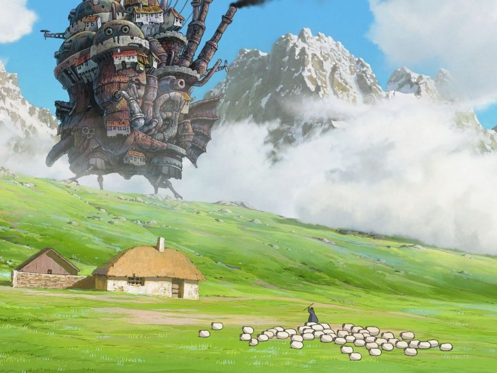
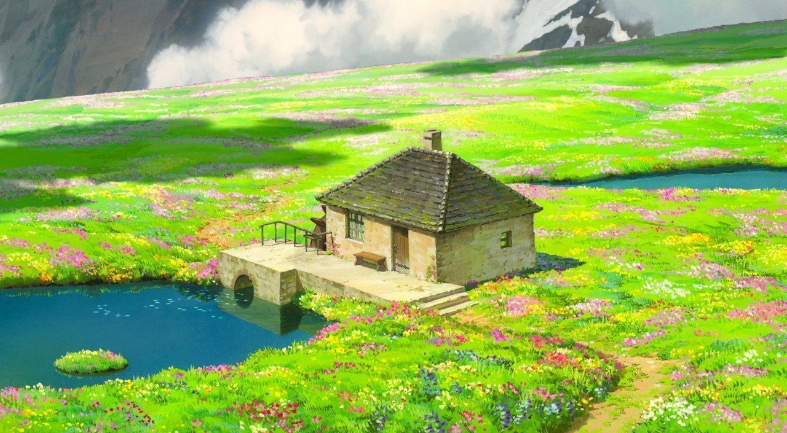

Das wandelnde Schloss
Das wandelnde Schloss ist ein Anime-Film des Studio Ghibli aus dem Jahr 2004, der auf dem Kinderbuch Sophie im Schloss des Zauberers der englischen Schriftstellerin Diana Wynne Jones basiert. Regie beim Film führte Hayao Miyazaki. Es werden die Erlebnisse einer Jugendlichen erzählt, die in eine alte Frau verwandelt wird und einen Zauberer kennenlernt. Während der Film auch als Anti-Kriegsfilm gesehen werden kann, findet im Buch kein Krieg statt. Unabhängig vom Buch zeigt der Film beständig Kriegshandlungen und die Gefahren und das Elend, die einen Krieg begleiten.

Entstehung und Produktion
Das Buch, im Original Howl’s Moving Castle von Diana Wynne Jones, wurde 1986 geschrieben und hat mit Castle in the Air und House of many Ways zwei Fortsetzungen. Auf Deutsch veröffentlichte es der Carlsen Verlag 2005 unter dem Titel Sophie im Schloss des Zauberers. Das Anime-Studio Ghibli setzte das Buch unter der Regie von Hayao Miyazaki als Zeichentrickfilm um, der schließlich 2004 veröffentlicht wurde.
Die junge Hutmacherin Sophie wird eines Tages von einem jungen Mann vor zwei aufdringlichen
Soldaten gerettet. Da die Hexe aus dem Niemandsland schon seit längerem Interesse an dem Retter
hegt, belegt diese Sophie aus Eifersucht mit einem Fluch, der Sophie in eine 90 Jahre alte Frau
verwandelt. Sophie flüchtet aus der Stadt und macht sich auf den Weg zum Niemandsland.
Auf dem Weg
hilft sie einer umgeworfenen Vogelscheuche auf, die ihr dankbar folgt. Als Sophie diese bittet, ihr
ein Haus zu suchen, erscheint das wandelnde Schloss des Zauberers Hauro. Im Schloss begegnet sie als
Erstes dem Feuerdämon Calcifer, mit dem sie einen Handel abschließt, dass sie von ihrem Fluch befreit
wird, wenn sie das Geheimnis des Vertrags zwischen Calcifer und Hauro herausfindet und damit Calcifer,
der die Energie für das Schloss liefert, befreit. Neben Hauro, den Sophie als den jungen Retter erkennt,
lebt im Haus auch sein Schüler Markl. Sophie stellt sich selbst als Putzfrau der beiden ein und beginnt
sogleich mit den Arbeiten.

Zwischen Buch und Film
Die Handlung von Buch und Film unterscheiden sich sehr, besonders was die Geschehnisse am Ende des Buches angeht. Der Film hat den Plot des Buches stark vereinfacht, viele wichtige Figuren miteinander verschmolzen oder weggelassen und einen Krieg hinzugedichtet, den es im Buch nie gab.Ebenso wurde die Handlung in eine völlig andere Welt transportiert, da es im Buch im Land Ingary, in welchem sich die Handlung abspielt, keinerlei Elektrizität oder Dampfmaschinen gibt. Aufgrund der Übertragung ins Japanische wurden die Namen zweier Hauptfiguren stark verändert. So heißt „Ha-uro“ eigentlich Howl und „Markl“ hört auf den Namen Michael.
Des Weiteren wurden Howls Herkunft und seine bisherige Geschichte völlig unterschlagen und seine Persönlichkeit stark verändert. Michael ist im Buch ein Jugendlicher und kein Kind.Die Hexe aus dem Niemandsland und ihr Feuerdämon (ebenfalls aus dem Film entfernt) bilden im Gegensatz zum Film ernstzunehmende und sehr gefährliche Gegner. Im Buch finden mehrere Kämpfe zwischen Howl und der Hexe statt und sie bedroht mehrfach sogar kleine Kinder. Im Gegensatz zum Film näht Sophie im Buch sehr viel und verzaubert dabei unabsichtlich z. B. einen von Howls Anzügen, da sie eine Hexe ist, was jedoch keiner wusste. Sophies Zauberkräfte spielen im Buch eine sehr wichtige Rolle, da sie mit ihnen dafür sorgt, dass der gebrochene Vertrag zwischen Howl und Calcifer nicht zu deren beider Tod führt. Im Film ist dies auch der Fall, allerdings werden Sophies Zauberkräfte mit keiner Silbe erwähnt, was zu einem „Plot Hole“ führt. (Fast ständig wird erwähnt, dass die Auflösung des Vertrages gefährlich ist und dass der Tod Calcifers auch Howls Tod bedeuten würde, doch als der Vertrag aufgelöst wird, hat das keinerlei negative Folgen für die Beteiligten.)